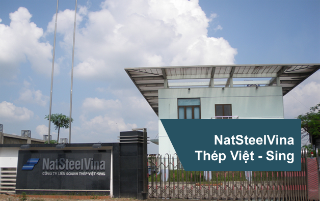

Trên cơ sở liên doanh giữa Tập đoàn Công nghiệp hàng đầu Singapore và Tổng công ty thép Việt Nam theo giấy phép đầu tư số 711/CP ngày 02/11/1993. Đến năm 1995 công ty chính thức vào hoạt động với dây chuyền cán thép công suất 150.000 tấn/năm được nhập khẩu từ Italya chuyên cung cấp các sản phẩm thép xây dựng và thép dây phục vụ cho ngành công nghiệp.
Ngày 25/11/2003 được tổ chức QMS đánh giá và cấp chứng nhận hệ thống quản lý chất lượng ISO 9001:2008
Năm 2011, Công ty cải tiến nâng cấp dây chuyền sản xuất nâng tổng công suất cán thép lên 250.000 tấn/năm nhằm đáp ứng nhu cầu không ngừng tăng của khách hàng về sản phầm thép NSV của công ty.